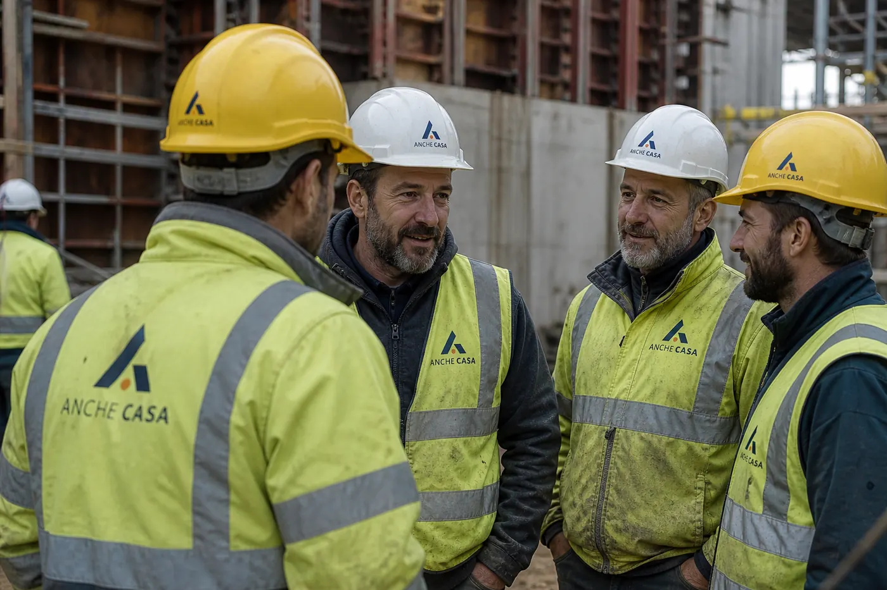

Lavoratori, parte generale
Le quattro ore comuni a ogni azienda. Concetti di rischio, prevenzione e organizzazione della sicurezza.


Formazione
Lavoratori, preposti, dirigenti, macchine, antincendio, primo soccorso e HACCP. La parte che si segue a distanza ha l’icona. Quella pratica resta in aula.
Chiedi un corsoSi seguono a distanza. L’icona sul bordo della scheda li distingue da quelli in aula.
Le quattro ore comuni a ogni azienda. Concetti di rischio, prevenzione e organizzazione della sicurezza.

Il richiamo periodico per chi ha già fatto il corso. Tiene viva la parte generale, senza tornare in aula.

Obblighi, organizzazione e scelte che incidono sulla sicurezza. Il modulo si segue dallo schermo.

Igiene degli alimenti per chi lavora in cucina, al banco o in sala. La parte teorica è online.
Si fanno in aula o sul luogo di lavoro. Servono la prova pratica, le attrezzature o il ruolo di preposto.

Chi sovrintende il lavoro degli altri. Compiti, segnali di rischio e modo di intervenire sul posto.

I rischi del mestiere e del luogo. Rischio basso, medio o alto, secondo l’azienda.

Abilitazione all’uso delle attrezzature di cui all’articolo 73. La prova si fa sulle macchine.

Livello 1, 2 o 3 secondo l’attività. Teoria e prova con gli estintori, in aula.

Addetti al primo intervento, gruppo A, B o C. Le manovre si provano in presenza.